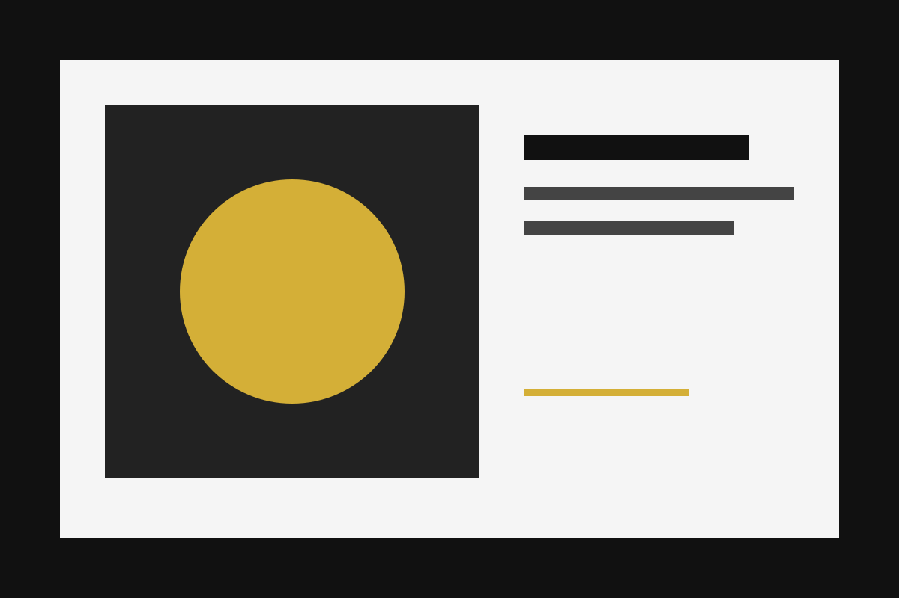
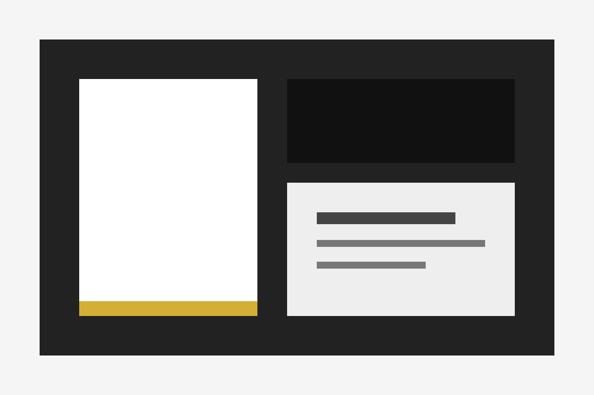
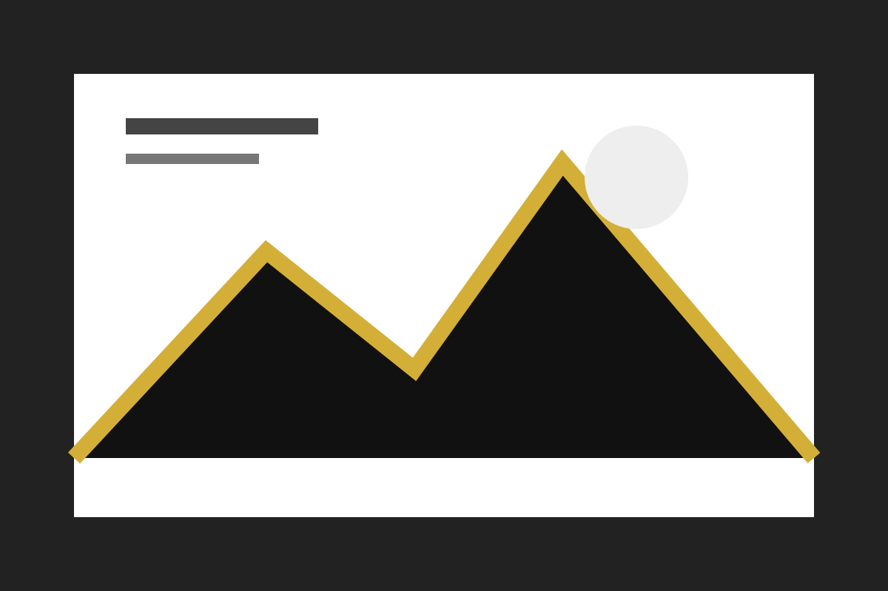

Проєкт 1

Опис першого навчального проєкту.
Мене звати Ростислав Пашко. Я займаюся веброзробкою та цікавлюся створенням сучасних вебзастосунків.
Кількість робіт: 0

Опис першого навчального проєкту.

Опис другого навчального проєкту.

Опис третього навчального проєкту.
Нові роботи зберігаються до перезавантаження сторінки. Для них використовується навчальний ескіз.